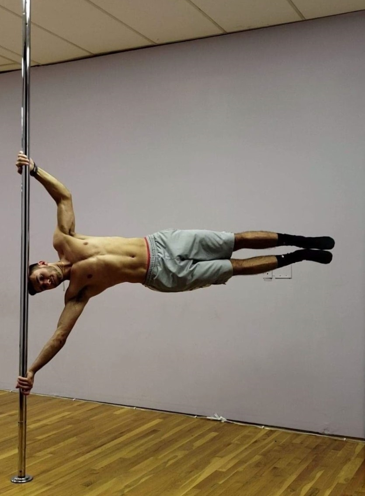

Calisthenics
Advantages
- High Rep Medium Weight
- Full body lifting / HIIT training
- High cardio training do to the liftings
- Inexpensive due to the body weight aspect
- Train Anywhere
- Functional Training, can help everyday task become easier
- body weight exercise
- uses numerous muscles in the body at once
Disadvantages
- Physical Therapy
- when training with an injury body weight training can progress an injury.
- Difficulty Progressing
- it's hard to train to be stronger when your main workout is you body weight.
|
